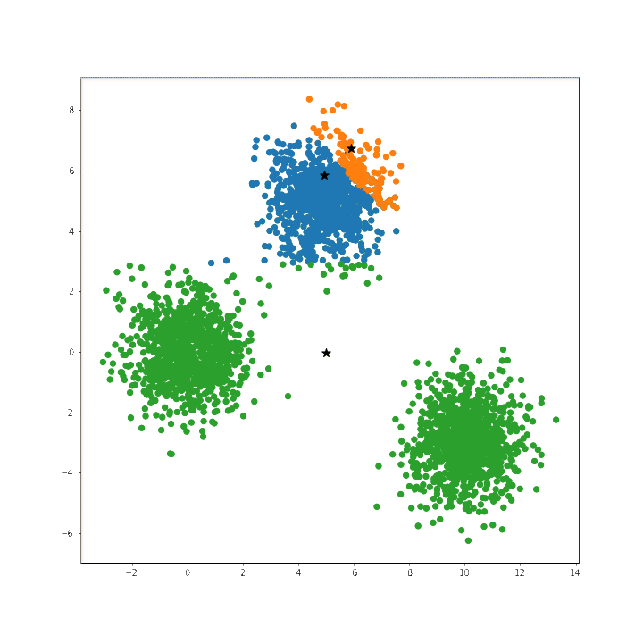

Clustering Algorithms: Some Thoughts
Clustering algorithms are essential in unsupervised learning, grouping similar data points based on patterns and structure. It’s dimensionality reduction in the extreme (each data point maps exactly to one of K clusters (or classes)). However, hyperparameter tuning plays a critical role in achieving good results. Here we exam which clustering algorithms can be tuned, how to use training, validation, or test data, and the evaluation metrics that make sense.
Why Tune Hyperparameters in Clustering?
Unlike supervised learning, clustering lacks ground truth labels to guide optimization. Therefore, we rely on intrinsic metrics or external strategies to evaluate cluster quality. Proper hyperparameter tuning can:
- Improve cluster quality.
- Reveal meaningful patterns in data.
- Adapt models to specific datasets.
Key Hyperparameters in Clustering Algorithms
| Algorithm | Key Hyperparameters | Notes |
|---|---|---|
| K-Means | n_clusters, init, max_iter |
Works well with validation sets and intrinsic metrics. |
| DBSCAN | eps, min_samples |
Sensitive to density; validation can be tricky. |
| Agglomerative | n_clusters, linkage |
Validation works well due to global similarity. |
| GMM | n_components, covariance_type |
Log-likelihood, BIC/AIC are helpful on validation data. |
| Spectral | n_clusters, affinity |
Needs full affinity matrix; splitting data can distort. |
| OPTICS | eps, min_samples |
Challenges arise with varied densities. |
Training, Validation, and Test Data
What is Validation Data?
Validation data is a subset of the dataset used to select hyperparameters. It acts as an intermediate step, ensuring test data remains untouched during tuning. This is especially useful for larger datasets.
When to Use Validation Data
Validation sets are most effective when:
- The dataset is large enough to split into training, validation, and test subsets.
- The clustering algorithm supports evaluation metrics that work on subsets.
- Hyperparameter tuning involves a search space requiring multiple iterations.
Why Not Test Data?
Using test data for tuning can result in overfitting and biased performance estimates. Always keep the test set as a final evaluation step.
Evaluation Metrics for Clustering
Intrinsic Metrics (No ground truth needed):
- Silhouette Score: Measures cluster cohesion and separation.
- Inertia (Sum of Squared Distances): Evaluates compactness (specific to K-Means).
- Davies-Bouldin Index: A lower value indicates better-defined clusters.
Extrinsic Metrics (Require ground truth):
- Adjusted Rand Index (ARI): Measures similarity between predicted and true labels.
- Normalized Mutual Information (NMI): Captures mutual dependence between clusters and labels.
Code Example: Tuning K-Means
Here’s how to tune n_clusters using a validation set:
from sklearn.datasets import make_blobs
from sklearn.cluster import KMeans
from sklearn.metrics import silhouette_score
from sklearn.model_selection import train_test_split
# Generate synthetic data
data, _ = make_blobs(n_samples=500, centers=4, cluster_std=0.6, random_state=42)
# Split data: 70% train, 15% validation, 15% test
X_train, X_temp = train_test_split(data, test_size=0.3, random_state=42)
X_val, X_test = train_test_split(X_temp, test_size=0.5, random_state=42)
# Hyperparameter tuning
n_clusters = [2, 3, 4, 5]
best_n_cluster = None
best_score, best_model = -1, None
for n in n_clusters:
kmeans = KMeans(n_clusters=n, random_state=42)
kmeans.fit(X_train)
labels_val = kmeans.predict(X_val)
score = silhouette_score(X_val, labels_val)
print(f"Clusters: {n}, Validation Silhouette Score: {score:.2f}")
if score > best_score:
best_score = score
best_model = kmeans
best_n_cluster = n
# Evaluate on test data
labels_test = best_model.predict(X_test)
test_score = silhouette_score(X_test, labels_test)
print(f"Test Silhouette Score: {test_score:.2f}")
print(f"Best Number of Clusters: {best_n_cluster}")What About Algorithms Sensitive to Validation Data?
Not all clustering algorithms work well with validation data:
- DBSCAN/OPTICS:
- Density-based algorithms may struggle because density assumptions vary between training and validation sets.
- Workaround: Use subsets of training data for validation instead of separate splits.
- Spectral Clustering:
- Needs the full affinity matrix, which can be distorted when splitting the data.
- Workaround: Use cross-validation techniques with the full dataset.
Cross-Validation for Clustering
When splitting the dataset is impractical, use cross-validation for robust hyperparameter tuning. Here’s an example for K-Means:
from sklearn.model_selection import KFold
from sklearn.metrics import silhouette_score
kf = KFold(n_splits=5, shuffle=True, random_state=42)
scores = []
for train_idx, val_idx in kf.split(data):
X_train, X_val = data[train_idx], data[val_idx]
kmeans = KMeans(n_clusters=3, random_state=42).fit(X_train)
labels = kmeans.predict(X_val)
scores.append(silhouette_score(X_val, labels))
print(f"Average Validation Score: {sum(scores)/len(scores):.2f}")Key Takeaways
- Use validation sets for tuning K-Means, Agglomerative Clustering, and GMM.
- Cross-validation or intrinsic metrics are alternatives when validation sets are impractical (e.g., DBSCAN, Spectral Clustering).
- Always evaluate on an untouched test set for unbiased performance estimates.
Questions for Reflection
- Should validation sets always be used in clustering, or are intrinsic metrics sufficient in some cases?
- How can cross-validation improve hyperparameter tuning for clustering?
- What strategies work best when clusters are imbalanced?
By following these guidelines, you can achieve robust and meaningful clustering results while avoiding common pitfalls in hyperparameter tuning. Happy clustering!